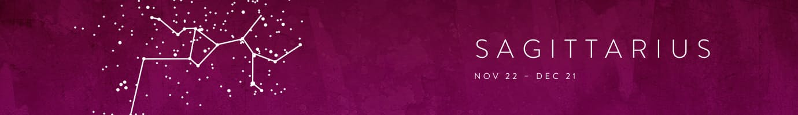
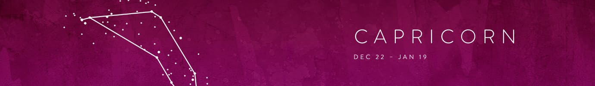

Fall is finally upon us, and with the change in seasons often comes a desire for change in other aspects of our lives. It’s fitting, then, that this is the month of Libra, an observant and collaborative sign that’s easily inspired by new ideas and people. Take a page from Libra’s book and keep an open mind to the unknown and the uncomfortable to achieve personal growth. Our friends at Mojave Rising have advice on how to get there.
LIBRA
This month, challenge yourself with the idea of second chances. Whether it’s at work or in your personal relationships, give the very things (or people) you’ve disavowed in the past another shot. It could be as simple as trying that dish you swore off years ago—or getting coffee with that acquaintance you were on the fence about. You just might be surprised by the results.
SCORPIO
You’re a clever one—so innately tuned into everything and everyone around you, in fact, that you sometimes look too much into things. This month let any creeping suspicions and skepticisms fall back and have faith that sometimes things really are as good as they seem. Exercise this muscle by visiting a new museum or local garden and immersing yourself in the beauty of it.
SAGITTARIUS
With indulgent Venus entering your sign later this month, it’s time to treat yourself and those around you. Whether it’s hosting a full-on feast for friends or going on a fall shopping spree, really do it up. The remainder of the year is going to be a whirlwind of activity for you, and there’s no better way to psych yourself up and get energized than a fun night out with some of your favorite folks—or a sassy new pair of shoes to take you there.
RELATED: ‘90’S ALERT: HOW TO WEAR VELVET THIS FALL CAPRICORN
It’s a good time to be you, Capricorn. With energetic Pluto and Mars in your sign this month, everything that would typically come off as cumbersome will feel downright delicious right now. Take an epic hike somewhere or try cooking yourself a really elaborate meal. You have all of the cosmic mojo you need to accomplish—nay, excel at—everything you put your mind to.
AQUARIUS
There’s a lot going on at the moment—and though you might feel the need to retreat inside your shell, resist that urge. Some quality one-on-one time with someone close is just what the doctor ordered. Hop on the phone for a long call or go on a camping trip together. Take this time to really dive deep into whatever it is that’s been bothering you. While doing this alone can feel overwhelming, going at it together can provide much-needed support and relief.
PISCES
You’re already very much in touch with your spiritual side. This month try channeling some of those mystical visions you so frequently have and those intense feelings into some type of healing work like Ayurveda or herbalism. By doing so, you’ll actually feel more grounded and be able to make a connection between the otherworldly and your physical surroundings.
RELATED: 8 THINGS THAT MIGHT HAPPEN IF YOU START MEDITATINGARIES
You like to keep on your toes, Aries, and nothing is worse to you than predictability and routine. This month, explore structured creativity. Anything from a fencing class to writing iambic poetry will get you the novelty and experience you so crave, while simultaneously challenging you to adhere to certain guidelines. The latter skill, which admittedly doesn’t always come easily for you, will prove to be very valuable soon.
TAURUS
After a summer filled with frolicking and fun with everyone around you, you’re looking for some grounding energy to carry you through the rest of the year. Use this month to really celebrate your sensual side. Now is a good time to redecorate your space with scented candles and cozy throws. By indulging your own senses, you’ll start to feel more centered in your daily life.
GEMINI
One of your best traits is that you easily adapt to new surroundings and circumstances. This flexibility, however, makes it difficult for you to make decisions—both big and small. This month, try not to feel so overwhelmed by the choices. Instead, just commit to something (anything) that feels good to you. It can be as small as a wardrobe change or as large as a new investment. Trust that your innate ability to roll with the punches will guide you through any outcome.
RELATED: 13 REASONS TO TRY A MINI BAG THIS FALLCANCER
October is a good month for both self-care and adventure. Book a solo trip that gets you out and about—and be open to striking up conversation with strangers along the way. It doesn’t have to be grand or even someplace far. Something as simple as renting a car and taking off on a nearby excursion is all you need to feel invigorated and confident for a change that is headed your way. Trust: You’ll be more than OK during it.
LEO
Time for a little introspection, Leo ladies. A fun way to do this? Those psychological quizzes you usually skip over while surfing the web. From the more in-depth ones like Myers-Briggs to the lighter ones that categorize you as a specific TV character, take them all and look for common themes in the results. Being conscious of who you really are—both on the outside and inside—will become a major asset to you as you navigate some important career decisions ahead.
RELATED: WHAT BOOK TO READ BASED ON YOUR PERSONALITYVIRGO
Though you’re more of a solitary figure by nature, this month is all about collaboration. By repositioning the “me” mentality to more of a “we,” you’ll experience personal and professional growth in ways you haven’t experienced before. Ease into this idea by taking a dance class with a close friend—or maybe getting a new makeover with them. And remember that it’s less about the end result and more about enjoying the company.